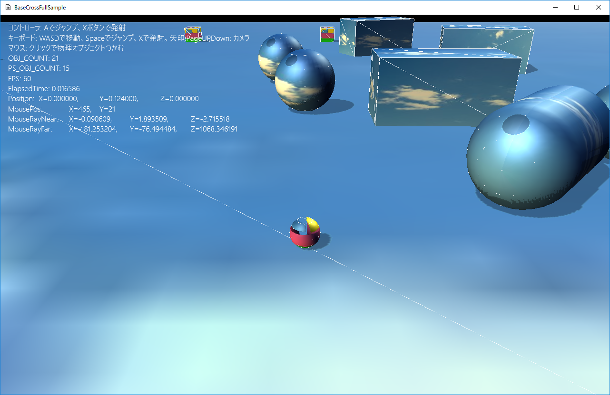

図1104a
void FireSphere::OnCreate() {
auto ptrTrans = GetComponent<Transform>();
ptrTrans->SetScale(Vec3(m_Scale));
ptrTrans->SetQuaternion(Quat());
ptrTrans->SetPosition(m_Emitter);
//コリジョンを付ける
auto ptrColl = AddComponent<CollisionSphere>();
//衝突判定はNoneにする
ptrColl->SetAfterCollision(AfterCollision::None);
ptrColl->SetSleepActive(true);
//重力をつける
auto ptrGra = AddComponent<Gravity>();
//影をつける
auto ptrShadow = AddComponent<Shadowmap>();
ptrShadow->SetMeshResource(L"DEFAULT_SPHERE");
auto ptrDraw = AddComponent<BcPNTStaticDraw>();
ptrDraw->SetDiffuse(Col4(1.0f, 1.0f, 1.0f, 1.0f));
ptrDraw->SetFogEnabled(true);
ptrDraw->SetMeshResource(L"DEFAULT_SPHERE");
ptrDraw->SetTextureResource(L"BROWN_TX");
auto group = GetStage()->GetSharedObjectGroup(L"FireSphereGroup");
group->IntoGroup(GetThis<GameObject>());
}
ptrColl->SetAfterCollision(AfterCollision::None);
void FireSphere::OnUpdate() {
auto ptrTrans = GetComponent<Transform>();
if (ptrTrans->GetPosition().y > m_ActiveMaxY) {
float elapsedTime = App::GetApp()->GetElapsedTime();
auto Pos = ptrTrans->GetPosition();
Pos += m_Velocity * elapsedTime;
ptrTrans->SetPosition(Pos);
}
else {
SetUpdateActive(false);
SetDrawActive(false);
}
}
SetUpdateActive(false);
SetDrawActive(false);
void FireSphere::OnCollisionEnter(const CollisionPair& Pair) {
auto ptrTrans = GetComponent<Transform>();
auto PtrSpark = GetStage()->GetSharedGameObject<MultiSpark>(L"MultiSpark", false);
if (PtrSpark) {
PtrSpark->InsertSpark(GetComponent<Transform>()->GetPosition());
}
auto ptrBox = dynamic_pointer_cast<Box>(Pair.m_Dest.lock()->GetGameObject());
auto ptrPlayer = dynamic_pointer_cast<Player>(Pair.m_Dest.lock()->GetGameObject());
if (ptrBox) {
ptrBox->FirShellHitBehavior(m_Velocity);
}
if (ptrPlayer) {
ptrPlayer->FirShellHitBehavior(m_Velocity);
}
auto pos = ptrTrans->GetPosition();
pos.y = m_ActiveMaxY;
ptrTrans->SetPosition(pos);
SetUpdateActive(false);
SetDrawActive(false);
}
//Xボタン
void Player::OnPushX() {
auto ptrTrans = GetComponent<Transform>();
Vec3 pos = ptrTrans->GetPosition();
pos.y += 0.3f;
Quat qt = ptrTrans->GetQuaternion();
Vec3 rot = qt.toRotVec();
float rotY = rot.y;
Vec3 velo(sin(rotY), 0.1f, cos(rotY));
velo.normalize();
velo *= 15.0f;
auto group = GetStage()->GetSharedObjectGroup(L"FireSphereGroup");
auto& vec = group->GetGroupVector();
for (auto& v : vec) {
auto shObj = v.lock();
if (shObj) {
if (!shObj->IsUpdateActive()) {
auto shFire = dynamic_pointer_cast<FireSphere>(shObj);
if (shFire) {
shFire->Reset(pos, velo);
return;
}
}
}
}
//空がなかったので新たに作成
GetStage()->AddGameObject<FireSphere>(pos, velo);
}
//空がなかったので新たに作成
GetStage()->AddGameObject<FireSphere>(pos, velo);
//衝突判定をつける
auto PtrCol = AddComponent<CollisionObb>();
//衝突判定はNoneにする
PtrCol->SetAfterCollision(AfterCollision::None);